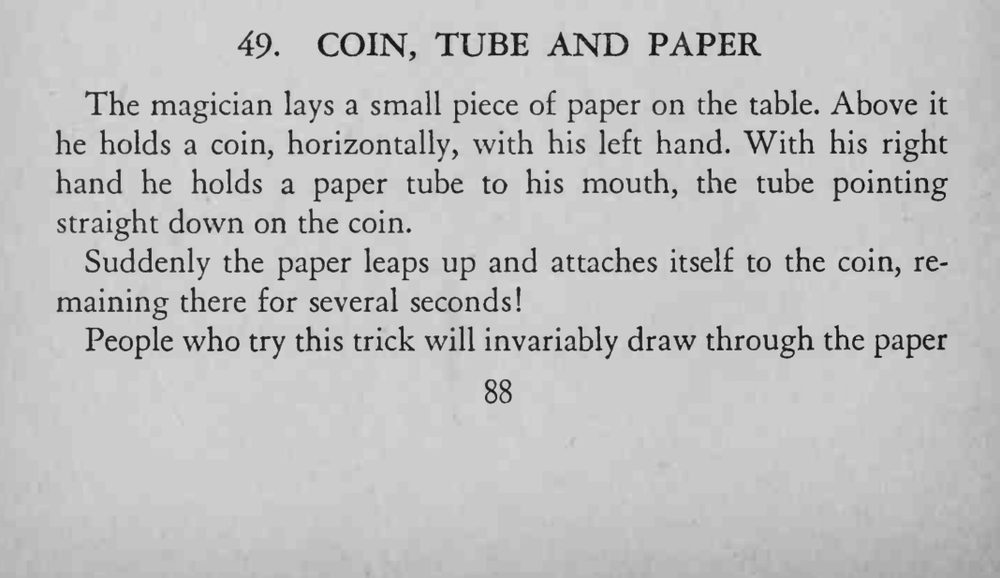
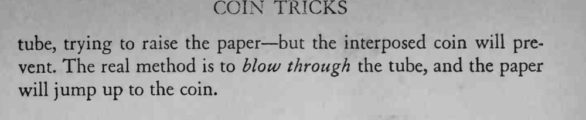

桌上放一小片纸，硬币悬在纸上方；用纸筒对着硬币一吹，纸片竟自己跳上去贴在硬币上，停留数秒才落下。
关键是往筒里吹气而不是吸气，大多数人第一反应都会去吸。


The magician lays a small piece of paper on the table. Above it he holds a coin, horizontally, with his left hand. With his right hand he holds a paper tube to his mouth, the tube pointing straight down on the coin. Suddenly the paper leaps up and attaches itself to the coin, remaining there for several seconds! People who try this trick will invariably draw through the paper tube, trying to raise the paper but the interposed coin will prevent. The real method is to blow through the tube, and the paper will jump up to the coin.